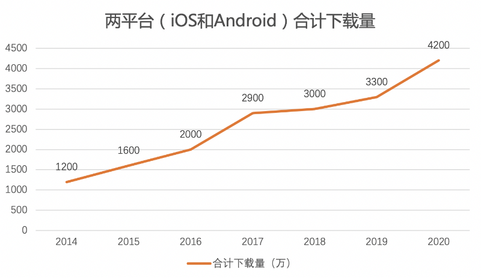

Simeji（シメジ）是一款由中国搜索引擎公司百度的日本法人百度株式会社开发、运营的日语输入法APP。本报告将从定位分析、产品结构功能分析、产品增长数据、竞争优势、用户评价和建议这六方面进行总结。
一. 定位分析
1.口号(slogan)
· 公司口号（Baidu Japan）：テクノロジーで複雑な世界をもっとシンプルに。用技术将复杂的世界变得更简单。
· 产品口号（Simeji）：日本語入力をもっと楽しくするアプリは、Simeji。Simeji，是一款使日语输入法变得更快乐的APP
· 产品定位： 日本語入力＆きせかえ顔文字キーボードアプリ、日语输入&变换颜文字的输入法APP
· 特色：颜文字、表情图、投稿社区、“云变换”
2.目标用户
· 中国地区：多为日语学习者和爱好者。
· 日本地区： 10～20代的年轻人（学生群体）为主。
二. 产品结构功能分析
1.皮肤
Simeji吸引学生等年轻人群体的主要原因之一在于其“可爱”的特性，因此在“皮肤”，也就是输入法显示界面上，下了很大功夫。Simeji将这一板块分为皮肤商城和自定义皮肤。
1.1 皮肤商城
· 精选：整个APP首页即为推荐皮肤和人气皮肤，将当季日本最流行和符合大众审美取向的皮肤列在一开始；
· 分类：按不同主题和种类将皮肤进行分类，便于根据个人喜好进行挑选。
1.2 自定义皮肤
自定义满足了当代标榜个性化的日本年轻人的喜好。用户可以自行对手机输入法选择背景图、插件、特效、键盘等，将DIY的乐趣充分融入产品。
2.投稿社区(Stamp)
2.1 功能
社区化运营是产品能普及和流传的关键。除了输入法基本功能，Simeji还设置了名为” Stamp”的投稿社区，像其他SNS社交软件一样，可以将自己设计的表情图等，配上文字心情发布，获得点赞评论与转换，同时共享到Simeji的表情图库里。
2.2 板块
放在” Stamp”首页的“发现”是推送整个社区内互动量较高、最新的、“猜你喜欢”的投稿；而“关注”则是自己follow的用户的投稿；最具特色的“圈子”则是让陌生人也能互动的板块，可加入自己感兴趣的圈子，与圈内人分享、交流，可以说提升了整个产品的社交功能。
Stamp增加了用户间的互动，也改变输入法软件单一的使用功能，提高了平台的日活量。
3.VIP
Simeji实行会员制，提供会员才能享受的特权，如自定义皮肤功能的强化、会员专用皮肤包、阻拦广告、即时翻译等。VIP的推行既一定程度提高收益，也提升用户的使用频率和参与度。
4.云变换
Simeji最大的优势，除了“颜文字和表情图”本身，还有“预测变换”、“超级云变换”功能。Simeji最大的优势，除了“颜文字和表情图”本身，还有“预测变换”、“超级云变换”功能。
4.1 颜文字和绘文字
颜文字和绘文字是日本网络用语重要的一部分，几乎所有日本年轻人都会用到，而Simeji里丰富的颜文字和绘文字，包含心情、表情、动物、日常用语等各方面，超过20万个，成为其占领年轻人市场的重要原因之一。
4.2 预测变换和超级云变换功能
Simeji运用云技术，通过数据分析，根据用户的输入记录，自动把输入词语预测变换成用户经常使用的词语、颜文字、绘文字和表情图。这种分析用户的喜好和输入习惯及倾向来进行推荐的做法在日本市场较少见。
三. 产品增长数据
2011年末Simeji由百度收购，百度凭借其强大的云输入技术，通过云数据端、超大词库、大引擎、即时更新的优势，让Simeji领先其他竞争对手，且此前其一直只有安卓版，自2014年开始发布iOS版，此后Simeji在两平台上下载量不断攀升在六年间实现3000万+的下载增长量。
截至目前，在iOS和Android两平台上下载量共达4200万，成为日本市场占有率第一、App Store总榜下载量第一的日文输入法APP。

四. 竞争优势
在日本最大的竞争对手应该是Flick日语输入法和Google日语输入法两家产品。在这里将Simeji与同样主打颜文字Flick进行简单的比较，意在分析Simeji的竞争力与劣势。
1. 优势
· 比起Flick色彩和排版单一，Simeji界面更可爱，更能吸引用户。
· 社交功能，除了投稿社区，还定期设置Simejiランキング，通过在APP上进行问卷调查，做各种各样不同主题的有趣的排行榜，鼓励用户进行相关投稿，搜集用户喜好，再来进行产品优化。
· 百度独有的云技术，可分析用户喜好，使其变成用户更易用和更好用的产品；
2. 劣势
· 安全性，将输入记录交给第三方（公司）会让及其注重隐私和个人空间的日本人不适应，且近来中国互联网产品海外风评受害，日本用户很可能担心信息泄露问题而拒绝使用；
· Flick有针对新用户的使用方法步骤说明，更为亲切。
五. 用户评价
（来源APP Store及网络）
1. 中国用户
评分：4.9/5
好评：日语氛围好，颜文字丰富，便于地道日语学习。
差评及建议：1.希望添加语音输入和手写输入功能；2.翻译差错。
2. 日本用户
评分4.5/5
好评：界面可爱，好用，预测变换很厉害
差评：危险，个人信息泄露。
六. 建议
Simeji是一家既有日本血脉，又有中国色彩的产品，因此在本地化上，不仅要尽力融入日本市场，中国市场方面也可加大力度，提高市场占有率。舆情显示，Simeji在中国用户的体验上仍存在较多问题，除上述问题外，就我个人体验而言，如Stamp版块和商城加载很慢，在微信上无法正常发送GIF等，这款面向海外的APP在本国市场上系统的兼容还需改善；
其次，针对日本市场，可设置针对新用户的使用说明，刚进入界面后跟随步骤了解Simeji各大板块的功能，帮助快速习得。我们作为国外企业的APP，除了在官网上，也可在APP上设置Q/A互动区，即时获得用户反馈，了解用户痛点，解决问题。